Code
rm(list = ls())
library(tidyverse)
library(tsibble)
library(fpp3)
library(fredr)
library(scales)
library(vars)
library(fable)
library(feasts)
library(knitr)
library(kableExtra)AI, specifically Claude, Perplexity, and Gemini were consulted with to troubleshoot errors, form tables for the output values, and help with cleaning up our code. AI also helped us to add additions making our knitted report very pretty.
rm(list = ls())
library(tidyverse)
library(tsibble)
library(fpp3)
library(fredr)
library(scales)
library(vars)
library(fable)
library(feasts)
library(knitr)
library(kableExtra)# OECD data: US GDP, Domestic Demand, and Imports of Goods & Services
# Period: 2000 Q1 to 2025 Q4
# Units: national currency, chain-linked volume, base year = 2017
# Unit multiplier = 6 (true values = observation × 10^6)
US_DD <- read.csv("us_dd.csv")
US_IMP <- read.csv("us_imp.csv")
US_GDP <- read.csv("us_gdp.csv")Here, the chunk below selects the relevant columns from each CSV and removes the rest, then left joins the tables together to make a singular reference table. This master table is also cleaned, set to a tsibble format for time series analysis, and adds logged versions of each varaible’s values for future analysis.
US_DD <- US_DD %>%
dplyr::select(date = TIME_PERIOD, country = REF_AREA,
domestic_demand = OBS_VALUE)
US_GDP <- US_GDP %>%
dplyr::select(date = TIME_PERIOD, country = REF_AREA,
gdp = OBS_VALUE)
US_IMP <- US_IMP %>%
dplyr::select(date = TIME_PERIOD, country = REF_AREA,
imports = OBS_VALUE)
us_clean <- US_DD %>%
left_join(US_GDP, by = c("date", "country")) %>%
left_join(US_IMP, by = c("date", "country")) %>%
mutate(date = yearquarter(date)) %>%
group_by(date, country) %>%
summarise(
domestic_demand = sum(domestic_demand, na.rm = TRUE),
gdp = sum(gdp, na.rm = TRUE),
imports = sum(imports, na.rm = TRUE),
.groups = "drop") %>% as_tsibble(key = country, index = date)
# Add log-transformed columns — stabilises variance and linearises growth
us_clean <- us_clean %>%
mutate(
log_gdp = log(gdp),
log_domestic_demand = log(domestic_demand),
log_imports = log(imports)
)
glimpse(us_clean)Rows: 104
Columns: 8
Key: country [1]
$ date <qtr> 2000 Q1, 2000 Q2, 2000 Q3, 2000 Q4, 2001 Q1, 2001 …
$ country <chr> "USA", "USA", "USA", "USA", "USA", "USA", "USA", "…
$ domestic_demand <dbl> 3564424, 3631450, 3643936, 3669409, 3655878, 36726…
$ gdp <dbl> 3469537, 3532727, 3536328, 3557441, 3545780, 35679…
$ imports <dbl> 415462.8, 428698.0, 444122.8, 444772.3, 439034.5, …
$ log_gdp <dbl> 15.05953, 15.07758, 15.07860, 15.08455, 15.08127, …
$ log_domestic_demand <dbl> 15.08651, 15.10514, 15.10857, 15.11554, 15.11185, …
$ log_imports <dbl> 12.93715, 12.96851, 13.00386, 13.00532, 12.99233, …Basic time plots of the base variables, GDP, domestic demand, and import values for the US are created below.
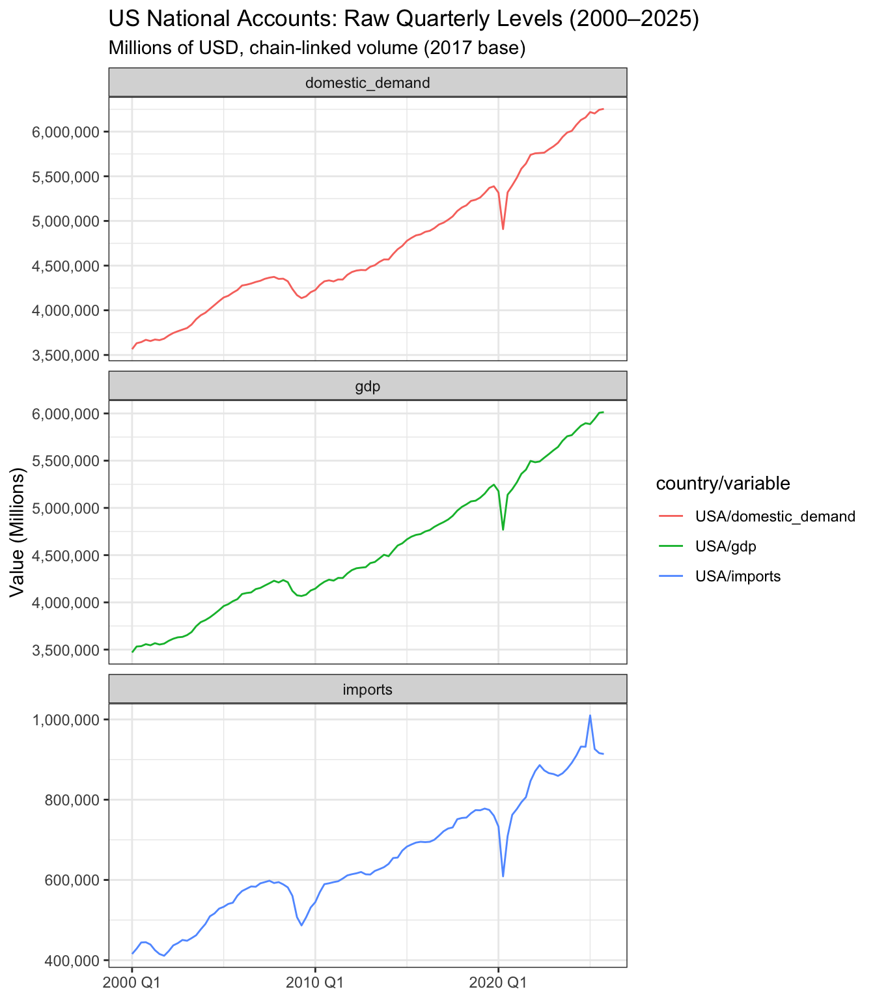
Analysis: All three series exhibit clear upward trends with a visible drops around 2008 for the global financial cricis and another drop in 2020 for the COVID pandemic. Imports show the most volatility of the three. The upward drift and different variances across time indicate the logged version of each variable should be taken.
Like the previous chunk, we are creating a time plot of each variable, this time for the logged versions of each variable.
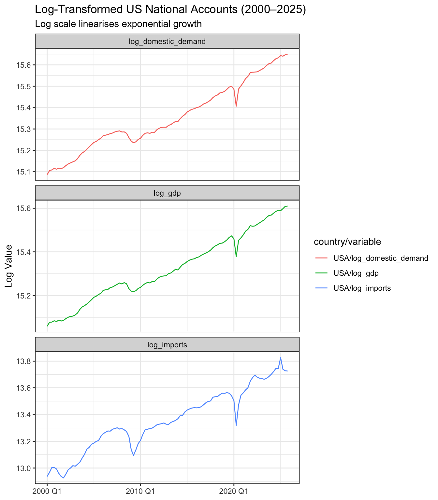
Analysis: Log transforming each variable did make the lines smoother, however the strong upward trend remains. The COVID-19 pandemic and the massive drop in value for each variable, will most likey impact the forecast variables. In more statistical terms, the COVID-19 pandemic created outliers in the data here.
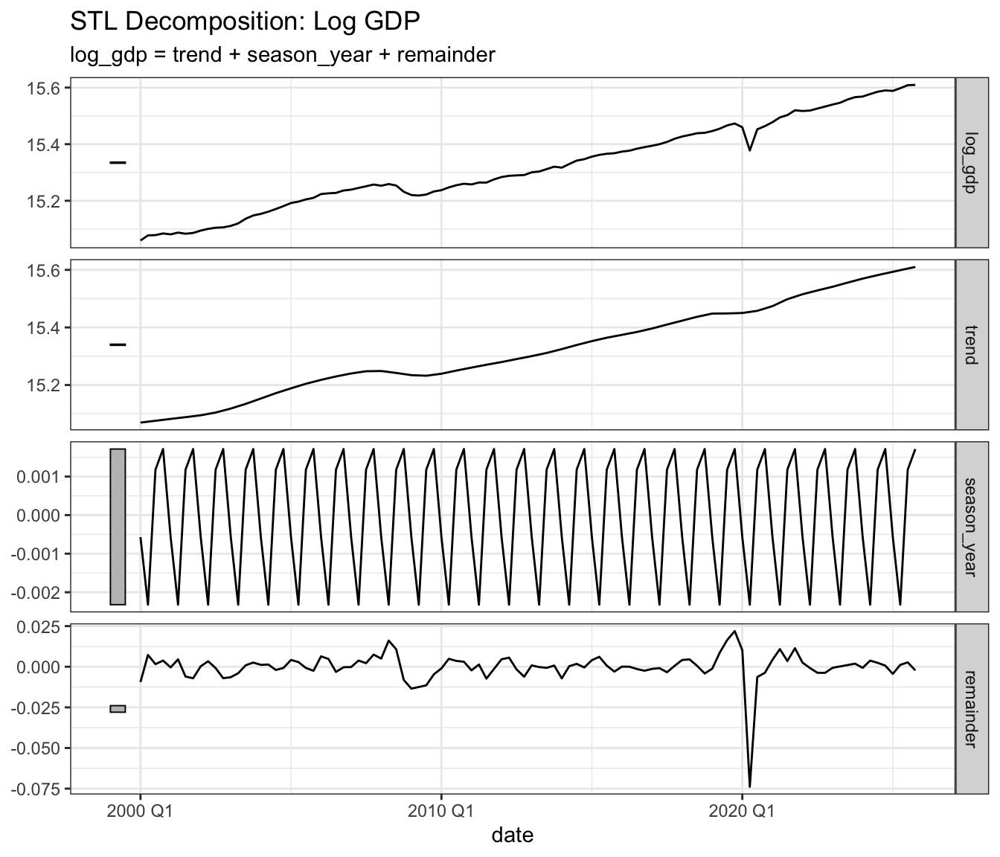
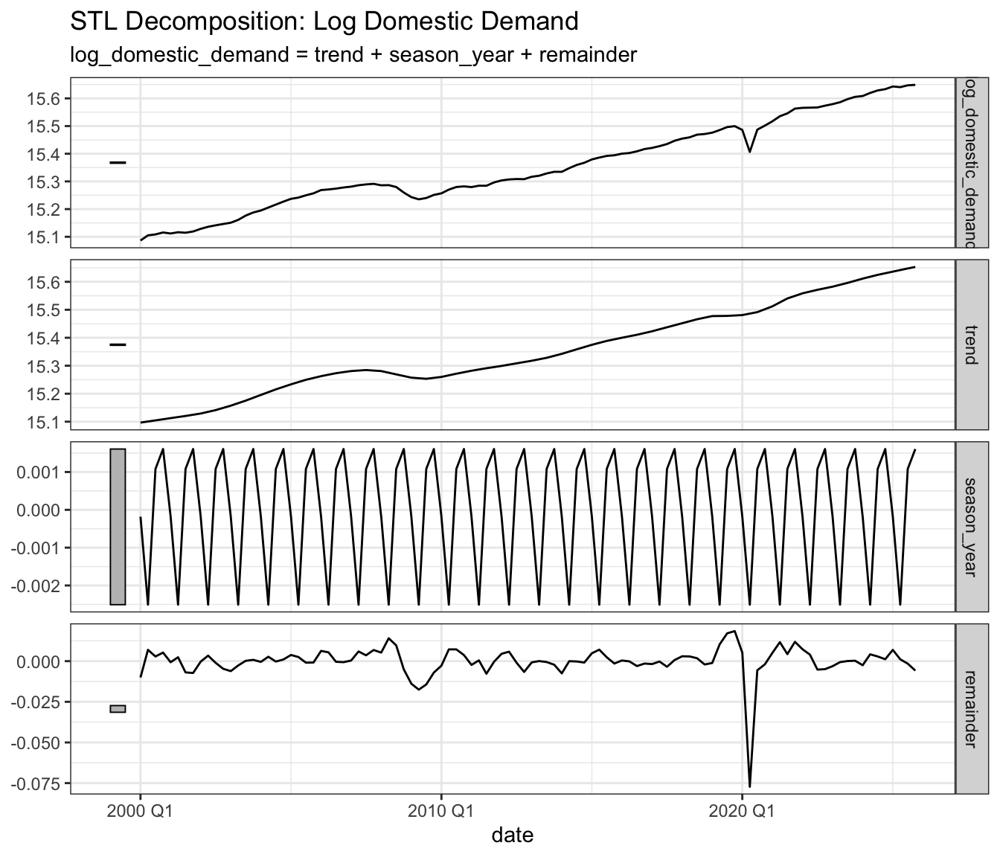
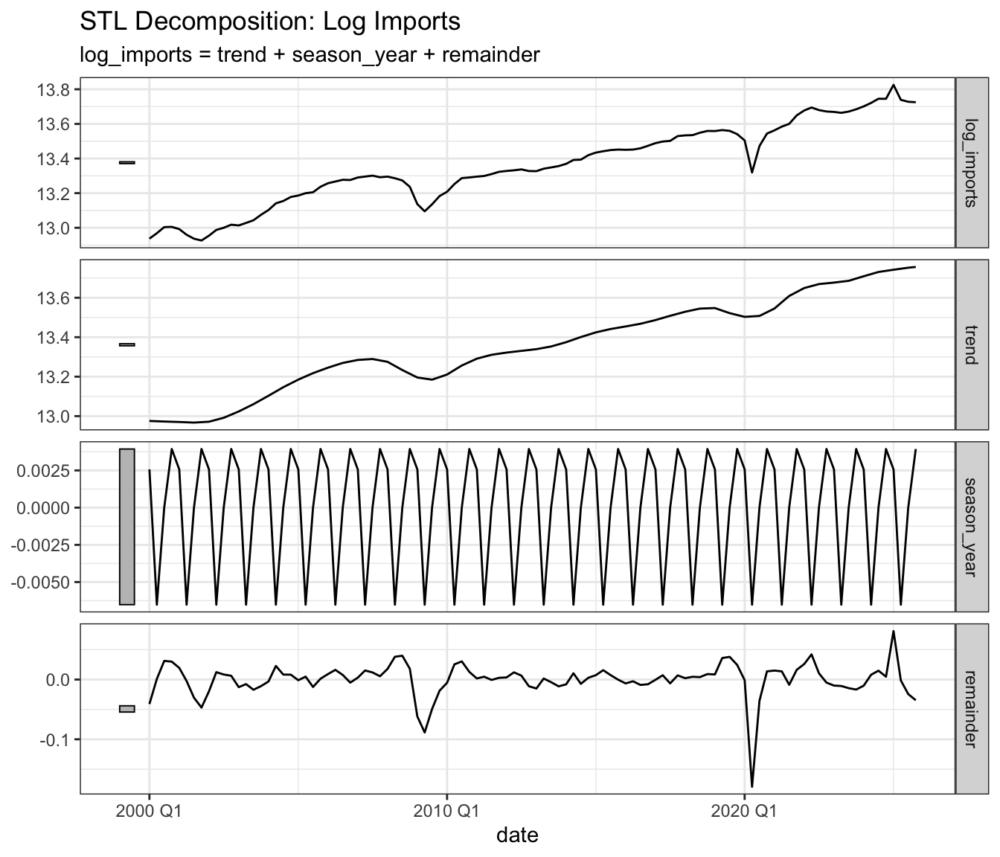
Analysis: All three series share the same decomposition pattern of a clear positive trend, consistent seasonal patterns, and a remainder that hovers around 0 (the mean) until the COVID-19 pandemic. The seasonal component is highly consistent across time, so additive instead of multiplicative seasonality should be present in our ETS models. When we use R and other tests to pick the best ETS decomposition, we will know for sure what specifications are needed.
As the chunk title implies, we are setting out training data period, 2000 Q1 to 2023 Q4, and our test data period, 2024 Q1 to 2025 Q4.
# Training: 2000 Q1 – 2023 Q4 = 96 quarters
# Test: 2024 Q1 – 2025 Q4 = 8 quarters
us_train <- us_clean %>% filter(date <= yearquarter("2023 Q4"))
us_test <- us_clean %>% filter(date >= yearquarter("2024 Q1"))
cat("Training observations:", nrow(us_train), "\n")Training observations: 96 cat("Test observations: ", nrow(us_test), "\n")Test observations: 8 ETS (Error, Trend, and Seasonal) models decompose a series into three exponentially smoothed components. Since all series are log-transformed, additive ETS on the log scale here is equivalent to multiplicative ETS on the original scale.
Five specifications are fit per variable: an automatically selected model, two damped/undamped additive variants, and one full additive seasonal model. Residuals are being checked before using the models for forecasting to confirm the data has white-noise for the remainders.
# GDP
ets_fit_gdp <- us_train %>%
model(
auto_ets = ETS(log_gdp),
ets_AAN = ETS(log_gdp ~ error("A") + trend("A") + season("N")),
ets_AAdN = ETS(log_gdp ~ error("A") + trend("Ad") + season("N")),
ets_AAA = ETS(log_gdp ~ error("A") + trend("A") + season("A")),
ets_AAdA = ETS(log_gdp ~ error("A") + trend("Ad") + season("A")))
# Domestic Demand
ets_fit_dd <- us_train %>%
model(
auto_ets = ETS(log_domestic_demand),
ets_AAN = ETS(log_domestic_demand ~ error("A") + trend("A") + season("N")), ets_AAdN = ETS(log_domestic_demand ~ error("A") + trend("Ad") + season("N")), ets_AAA = ETS(log_domestic_demand ~ error("A") + trend("A") + season("A")), ets_AAdA = ETS(log_domestic_demand ~ error("A") + trend("Ad") + season("A")))
# Imports
ets_fit_imp <- us_train %>%
model(
auto_ets = ETS(log_imports),
ets_AAN = ETS(log_imports ~ error("A") + trend("A") + season("N")),
ets_AAdN = ETS(log_imports ~ error("A") + trend("Ad") + season("N")),
ets_AAA = ETS(log_imports ~ error("A") + trend("A") + season("A")),
ets_AAdA = ETS(log_imports ~ error("A") + trend("Ad") + season("A")))| Model | AICc | BIC |
|---|---|---|
| auto_ets | -391.96 | -379.81 |
| ets_AAN | -389.22 | -377.06 |
| ets_AAdN | -383.39 | -368.95 |
| ets_AAdA | -376.54 | -353.49 |
| ets_AAA | -357.19 | -336.21 |
| Model | AICc | BIC |
|---|---|---|
| auto_ets | -384.39 | -372.24 |
| ets_AAN | -383.16 | -371.01 |
| ets_AAdN | -377.02 | -362.58 |
| ets_AAdA | -368.77 | -345.72 |
| ets_AAA | -287.36 | -266.37 |
| Model | AICc | BIC |
|---|---|---|
| auto_ets | -208.78 | -196.63 |
| ets_AAN | -207.87 | -195.71 |
| ets_AAdN | -205.39 | -190.95 |
| ets_AAdA | -197.21 | -174.15 |
| ets_AAA | -196.38 | -175.39 |
# A mable: 1 x 1
.model_desc
<model>
1 <ETS(M,A,N)># A mable: 1 x 1
.model_desc
<model>
1 <ETS(M,A,N)># A mable: 1 x 1
.model_desc
<model>
1 <ETS(M,A,N)>Analysis: Lower AICc indicates a better fitting model, and here R’s auto-selected model performed the best with every variable. We were right with the first manually selected model of having an additive trend and no seasonality, but no dampening was present in these ETS models. Every auto-selected model by R has the same specifications of ETS(M,A,N), or multiplicative errors, additive trend, and no seasonality.
Residuals are checked on the auto-selected model (best AICc candidate) before forecasting. A well-specified model should show 3 main traits: no autocorrelation in the time plot, ACF values within 95% bounds, and a normally distributed histogram.
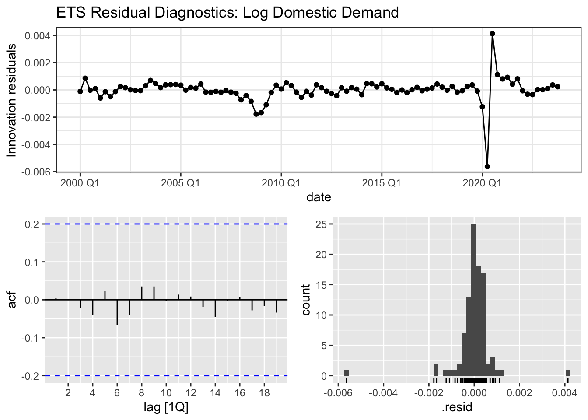
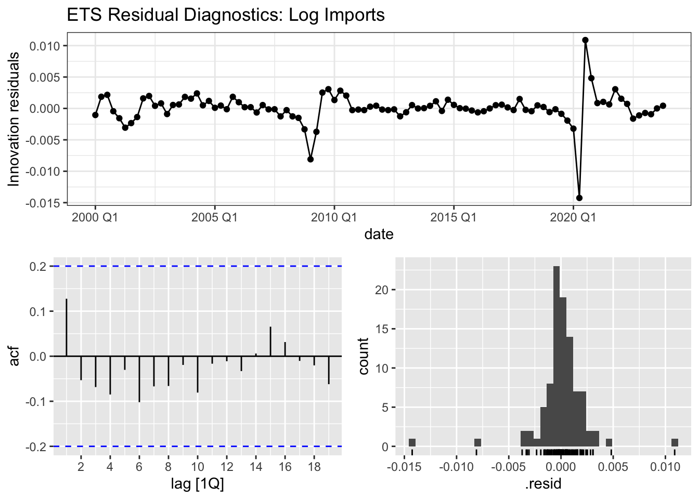
Analysis: Examine each panel. The 2020 COVID shock still appears strongly on the time plot, but otherwise the mean is 0 for every variable in the best ETS models. All gg_tsresiduals plots for each ETS have ACF values within the 95% boundary, and a normally distributed histogram. We can therefor conclude that taking the log of the variables has given us stationary data to work with that’s white noise. An Ljung-Box test will also be performed.
The Ljung-Box Test on our ETS models has a null hypothesis that there is no autocorrelation in our variables. If the p-value is below 0.05 as our threshold, we reject the null hypothesis and say that some autocorrelation is present.
| variable | lb_stat | lb_pvalue |
|---|---|---|
| Log GDP | 1.3930 | 0.9943 |
| Log Domestic Demand | 1.0363 | 0.9980 |
| Log Imports | 5.2304 | 0.7327 |
Analysis: In all of our Ljung-Box tests for the logged GDP, domestic demand, and imports we see a p-value above 0.05. We get 0.9943, 0.9980, and 0.7327 for each of our values respectively, and because they are above 0.05 we fail to reject the null hypothesis. In other words, our data has again been verified to have no autocorrelation and that we can proceed with analysis.
The code below is going to now take our models, and after training them on training data, forecast them on the test data to verify accuracy of the ETS models.
| variable | .model | RMSE | MAE | MAPE | MASE |
|---|---|---|---|---|---|
| Log GDP | auto_ets | 0.0034 | 0.0030 | 0.0191 | NaN |
| Log GDP | ets_AAN | 0.0053 | 0.0045 | 0.0289 | NaN |
| Log GDP | ets_AAA | 0.0064 | 0.0057 | 0.0364 | NaN |
| Log GDP | ets_AAdN | 0.0093 | 0.0080 | 0.0512 | NaN |
| Log GDP | ets_AAdA | 0.0104 | 0.0092 | 0.0590 | NaN |
| variable | .model | RMSE | MAE | MAPE | MASE |
|---|---|---|---|---|---|
| Log DD | ets_AAN | 0.0055 | 0.0045 | 0.0287 | NaN |
| Log DD | auto_ets | 0.0057 | 0.0047 | 0.0300 | NaN |
| Log DD | ets_AAA | 0.0084 | 0.0073 | 0.0466 | NaN |
| Log DD | ets_AAdA | 0.0107 | 0.0098 | 0.0627 | NaN |
| Log DD | ets_AAdN | 0.0118 | 0.0108 | 0.0688 | NaN |
| Log Imports | ets_AAN | 0.0396 | 0.0292 | 0.2118 | NaN |
| Log Imports | auto_ets | 0.0426 | 0.0303 | 0.2199 | NaN |
| Log Imports | ets_AAA | 0.0453 | 0.0341 | 0.2478 | NaN |
| Log Imports | ets_AAdN | 0.0586 | 0.0479 | 0.3476 | NaN |
| Log Imports | ets_AAdA | 0.0682 | 0.0591 | 0.4291 | NaN |
Starting with the results of our Log GDP forecast accuracy, we see that the auto-selected ETS model by R has the lowest RMSE of all models. The ETS(A,A,N) model which was our first manually selected model performed the 2nd best out of the other models in terms of RMSE. When plotting the forecast of the future, we will therefor use the R-selected model since it has the lowest RMSE. Moving to the Log of domestic demand and log of imports ETS tests, we actual see the ETS(A,A,N) for Log_dd (domestic demand) has the lowest RMSE. This contrasted our training data results, but doing well on the training data doesn’t guarentee a model does well on the test data. This same ETS(A,A,N) was also performing best on the test data for the log_imp variable. Therefor, when plotting our forecasts for the future, we will be using the ETS(A,A,N) model for domestic demand and imports. One important caveat is that while our manual models did well on the training data, that may be affected by the COVID outlier data, so it may not be the absolutely best data.
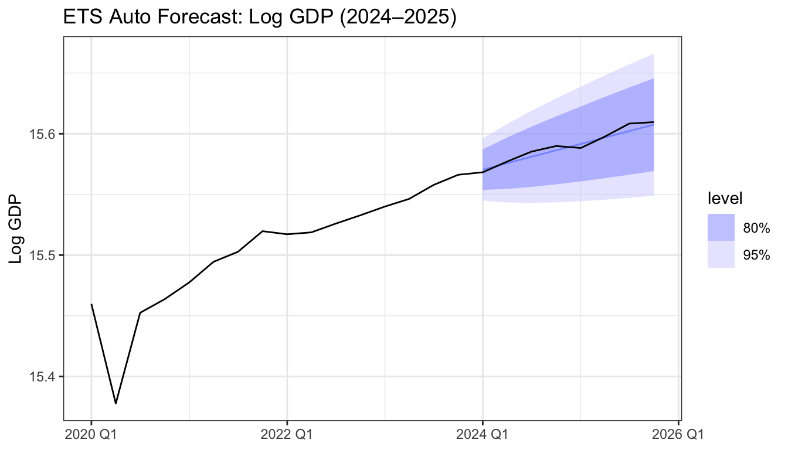
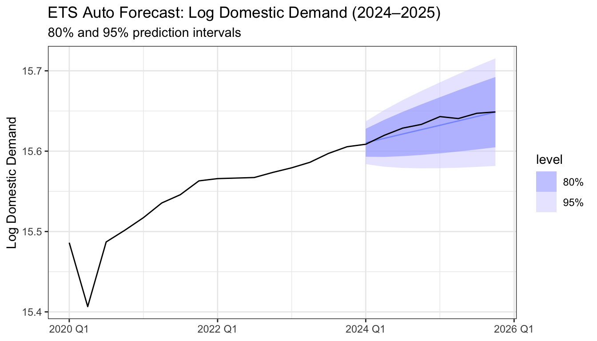
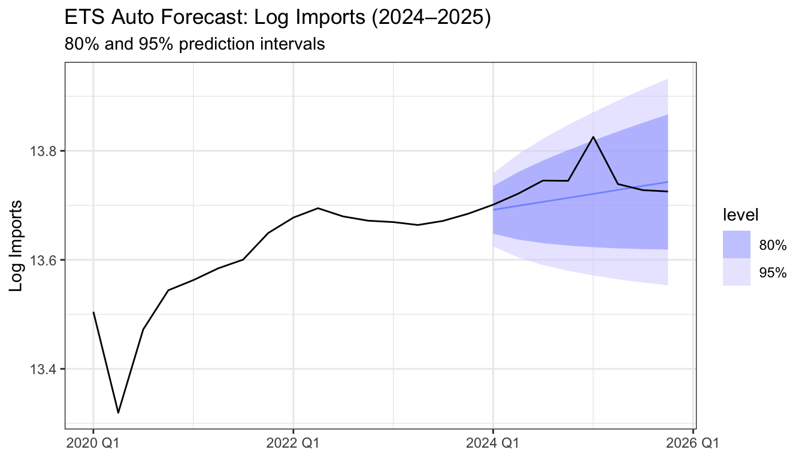
Analysis: Above we see the plots of each of the auto-selected ETS models on our test data. Each plot forecasts quite closely to the actual data, including the logged imports plot. Despite a small spike in real values for the logged imports, the 80% confidence interval contains both the forecast and actual data.
Models are now forecasting into the future based on their performance of the test data.
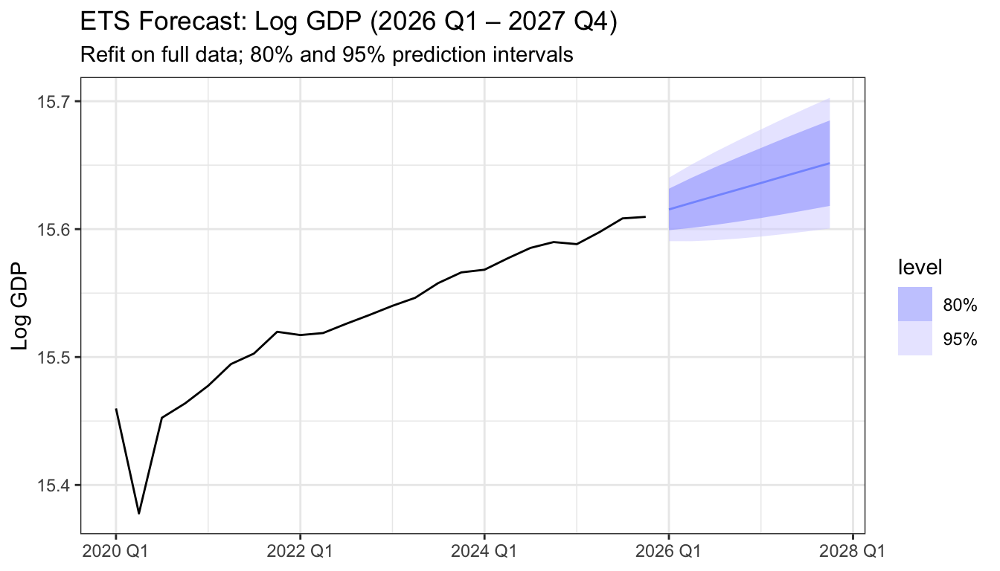
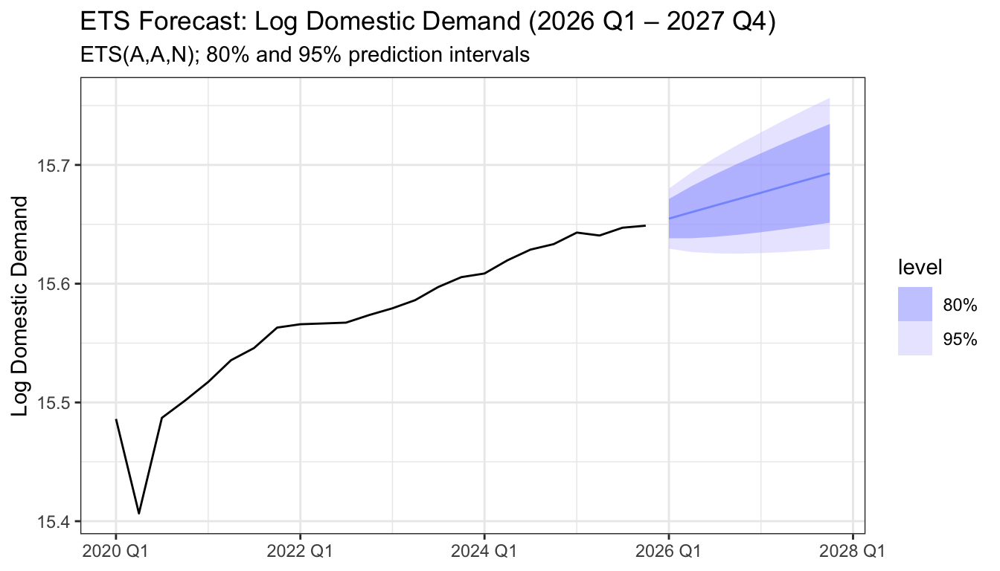
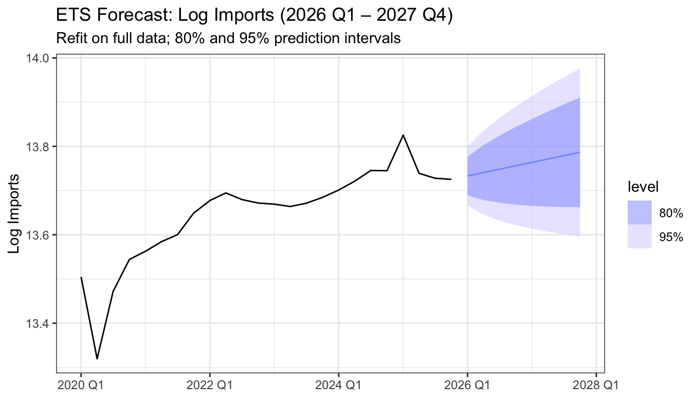
Analysis: The above plots have taken the best ETS model based on performance on the test data, and forecasted the long values for each variable 9 quarters into the future. Prediction intervals widen the longer out we go due to unforeseeable shocks. Every model when looking at the confidence intervals and steepness of the forecast lines looks pretty consistent with the data as a whole, so Crawford and I are quite happy with these forecasts.
ARIMA models use lagged values and lagged errors to capture autocorrelation structure after differencing to achieve stationarity. The differencing order of “d” is determined by unit root tests; seasonal differencing of “D” is evaluated by comparing AICc values.
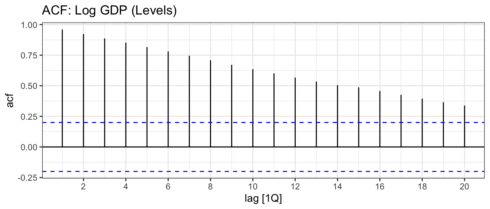
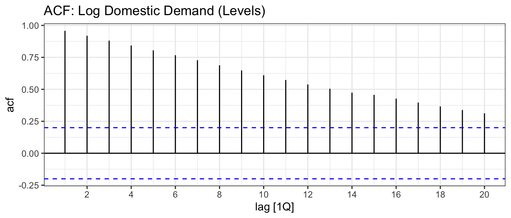
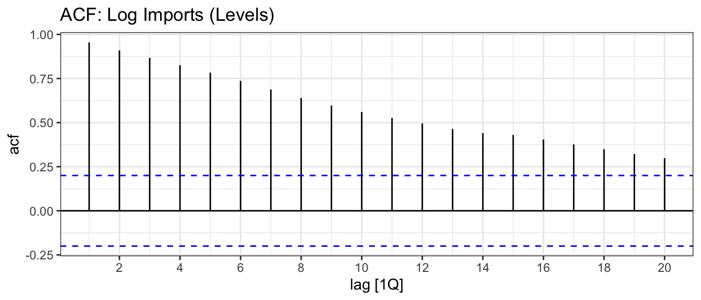
Analysis: A slow, linear decay in the ACF is the most obvious sign that the data needs to be transformed. The data is clearly non-stationary, especially since we saw at the very beginning a strong positive trend.
KPSS tests being used below are another way we will be confirming whether our data is stationary for ARIMA use (as it’s required). KPSS tests assume a null hypothesis that the data is stationary and that no unit roots are present. We will again use a 0.05 threshold to determine if this criteria is met.
| Variable | KPSS Statistic | P-value |
|---|---|---|
| Log GDP | 2.4264 | 0.01 |
| Log Domestic Demand | 2.3729 | 0.01 |
| Log Imports | 2.3052 | 0.01 |
| Variable | Differences Required |
|---|---|
| Log GDP | 1 |
| Log Domestic Demand | 1 |
| Log Imports | 1 |
Analysis: From the KPSS table generated by R, every p-value for each of our logged variables is one, so not only do we reject the null hypothesis, but this confirms we must difference the data and test if the variables are stationary afterward. Moving to the unit root test table and differencing required, the table indicates we need to differentiate each logged variable once to have stationary data.
After applying one difference, the ACF and PACF of the differenced series reveal the AR and MA orders.
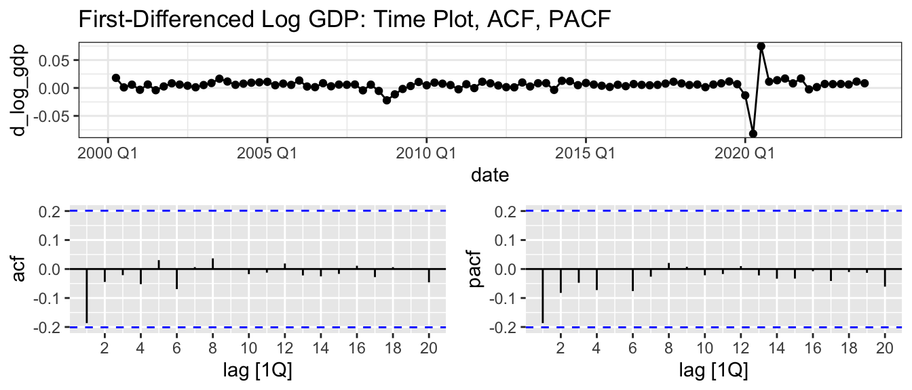
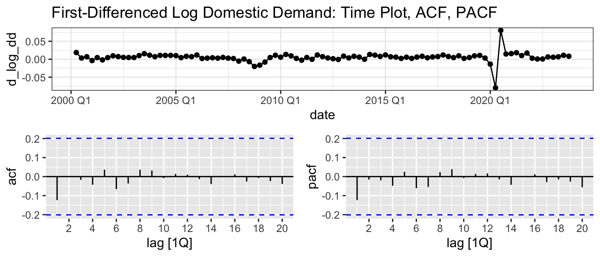
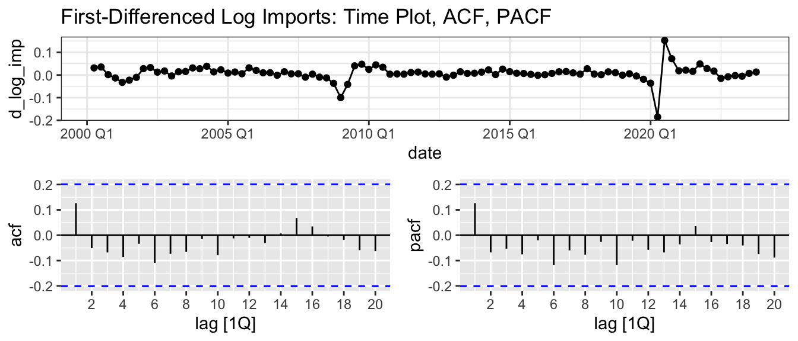
Analysis: After first differencing, gg_tsdisplay plots indicate that our data is now stationary. The ACF plots of every differnced log variable have no values crossing the 95% boundary, and the PACF plots have no values that indicate an AR process needed. As such, we can now go forward, layout some ARIMA models, fit them to the test and training data, compare results, then forecast into the future.
Based on the ACF/PACF diagnostics above, three manual specifications are fit alongside the auto-selected model. Seasonal variants are included given the STL-confirmed quarterly seasonality. The variety of models is to make sure that, in case some data wasn’t picked, we are covering our bases.
# GDP
arima_fit_gdp <- us_train %>%
model(
auto_arima = ARIMA(log_gdp),
arima_011 = ARIMA(log_gdp ~ 1 + pdq(0,1,1) + PDQ(0,0,0)),
arima_011s = ARIMA(log_gdp ~ 1 + pdq(0,1,1) + PDQ(0,1,1)),
arima_111s = ARIMA(log_gdp ~ 1 + pdq(1,1,1) + PDQ(1,1,0))
)
# Domestic Demand
arima_fit_dd <- us_train %>%
model(
auto_arima = ARIMA(log_domestic_demand),
arima_011 = ARIMA(log_domestic_demand ~ 1 + pdq(0,1,1) + PDQ(0,0,0)),
arima_111 = ARIMA(log_domestic_demand ~ 1 + pdq(1,1,1) + PDQ(0,0,0)),
arima_011s = ARIMA(log_domestic_demand ~ 1 + pdq(0,1,1) + PDQ(0,1,1)),
arima_111s = ARIMA(log_domestic_demand ~ 1 + pdq(1,1,1) + PDQ(1,1,0))
)
# Imports
arima_fit_imp <- us_train %>%
model(
auto_arima = ARIMA(log_imports),
arima_011 = ARIMA(log_imports ~ 1 + pdq(0,1,1) + PDQ(0,0,0)),
arima_111 = ARIMA(log_imports ~ 1 + pdq(1,1,1) + PDQ(0,0,0)),
arima_011s = ARIMA(log_imports ~ 1 + pdq(0,1,1) + PDQ(0,1,1)),
arima_111s = ARIMA(log_imports ~ 1 + pdq(1,1,1) + PDQ(1,1,0))
)| Model | AICc | BIC |
|---|---|---|
| auto_arima | -553.80 | -546.40 |
| arima_011 | -553.80 | -546.40 |
| arima_011s | -514.65 | -505.07 |
| arima_111s | -491.84 | -479.99 |
| Model | AICc | BIC |
|---|---|---|
| auto_arima | -547.12 | -542.15 |
| arima_011 | -546.48 | -539.08 |
| arima_111 | -544.31 | -534.54 |
| arima_011s | -507.75 | -498.17 |
| arima_111s | -478.35 | -466.50 |
| Model | AICc | BIC |
|---|---|---|
| auto_arima | -375.71 | -370.73 |
| arima_011 | -375.27 | -367.87 |
| arima_111 | -373.19 | -363.42 |
| arima_011s | -343.39 | -333.81 |
| arima_111s | -307.65 | -295.80 |
Analysis: After laying out the different ARIMA model specifications, and then applying them to the US training data, we now have the results to see what models have fitted well. In every table, the lowest AICc model has been highlighted in yellow, which is R’s auto-selected model for each.
Series: log_gdp
Model: ARIMA(0,1,1) w/ drift
Coefficients:
ma1 constant
-0.2205 0.0053
s.e. 0.1086 0.0010
sigma^2 estimated as 0.0001669: log likelihood=280.03
AIC=-554.06 AICc=-553.8 BIC=-546.4Series: log_domestic_demand
Model: ARIMA(0,1,0) w/ drift
Coefficients:
constant
0.0055
s.e. 0.0014
sigma^2 estimated as 0.0001811: log likelihood=275.63
AIC=-547.25 AICc=-547.12 BIC=-542.15Series: log_imports
Model: ARIMA(0,1,0) w/ drift
Coefficients:
constant
0.0079
s.e. 0.0034
sigma^2 estimated as 0.001087: log likelihood=189.92
AIC=-375.84 AICc=-375.71 BIC=-370.73Using the report function, we get the following ARIMA specifications for log_gdp, log_dd, and log_imp respectively: ARIMA(0,1,1), ARIMA(0,1,0), and ARIMA(0,1,0). Like before, the domestic demand and import variables share the same specifications like the ETS analysis.
For all the logged variables with one difference, here the the specifications for each (GDP, DD, IMP):
ARIMA(0,1,1) –> AR(0), 1 difference, MA(1)
ARIMA(0,1,0) –> AR(0), 1 difference, MA(0)
ARIMA(0,1,0) –> AR(0), 1 difference, MA(0)
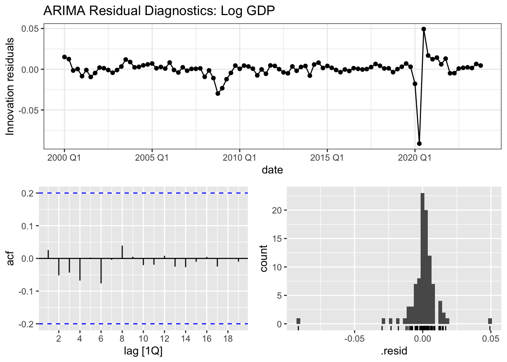
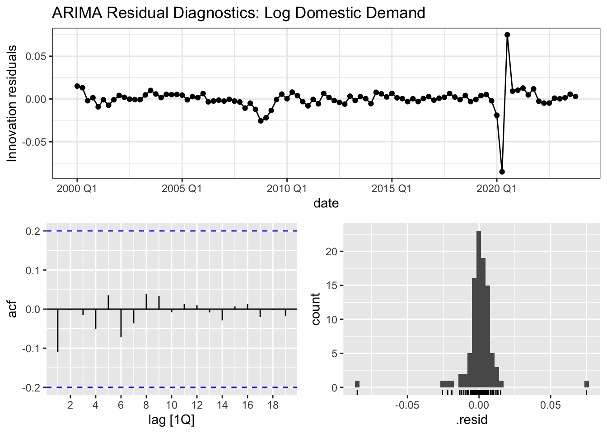
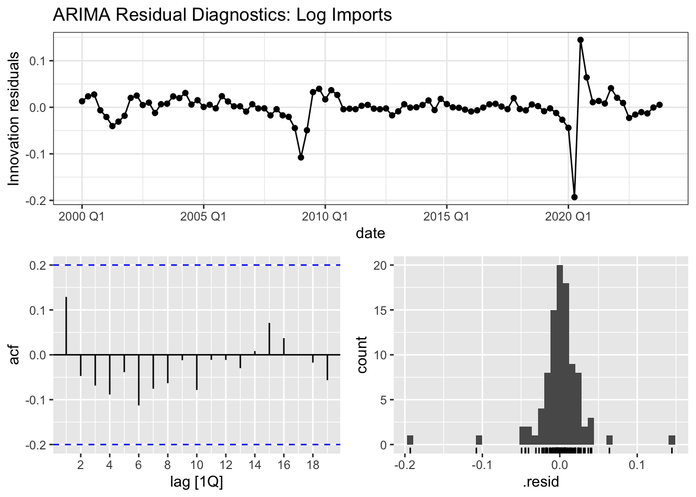
Analysis: The 2020 COVID spike again shows up most prominently in the time plot, but all other plots are what we want for a stationary time series. The ACF plots of every auto-selected ARIMA model (by R) show no ACF values crossing the 95% boundary, and a normal distribution histogram of the values as well, indicating stationary time series data.
| Variable | LB Statistic | p-value |
|---|---|---|
| Log GDP | 1.7700 | 0.9396 |
| Log Domestic Demand | 2.4589 | 0.8730 |
| Log Imports | 5.6707 | 0.4611 |
Analysis: In all of our Ljung-Box tests for the first difference logged GDP, domestic demand, and imports we see a p-value above 0.05. We get 0.9396, 0.8730, and 0.4611 for each of our values respectively, and because they are above 0.05 we fail to reject the null hypothesis. In other words, our data has again been verified to have no autocorrelation and that we can proceed with ARIMA model analysis.
| Variable | Model | RMSE | MAE | MAPE | MASE |
|---|---|---|---|---|---|
| Log DD | auto_arima | 0.0052 | 0.0043 | 0.0277 | NaN |
| Log DD | arima_011s | 0.0053 | 0.0046 | 0.0294 | NaN |
| Log DD | arima_011 | 0.0056 | 0.0047 | 0.0299 | NaN |
| Log DD | arima_111 | 0.0058 | 0.0048 | 0.0308 | NaN |
| Log DD | arima_111s | 0.0062 | 0.0053 | 0.0342 | NaN |
| Log GDP | arima_011 | 0.0034 | 0.0030 | 0.0189 | NaN |
| Log GDP | auto_arima | 0.0034 | 0.0030 | 0.0189 | NaN |
| Log GDP | arima_111s | 0.0037 | 0.0033 | 0.0211 | NaN |
| Log GDP | arima_011s | 0.0039 | 0.0030 | 0.0194 | NaN |
| Log Imports | arima_011 | 0.0411 | 0.0295 | 0.2140 | NaN |
| Log Imports | arima_111 | 0.0412 | 0.0296 | 0.2150 | NaN |
| Log Imports | auto_arima | 0.0415 | 0.0299 | 0.2168 | NaN |
| Log Imports | arima_011s | 0.0477 | 0.0352 | 0.2556 | NaN |
| Log Imports | arima_111s | 0.0517 | 0.0387 | 0.2809 | NaN |
Now we take all our ARIMA models after apply to training data, and applying them to the test data to determine what specifications will be best for forecasting future values. With the r code in the chunk above, our table of results colors the RMSE value of the best forming models in blue. For differenced log domestic demand, the auto-selected model performs best with an RMSE of 0.0052. For differenced log GDP, both the auto-selected model and ARIMA(0,1,1) model perform equally well, RMSE of 0.0034, so we could go with either model according to R. Lastly for the differenced log imports, the ARIMA(1,1,1) specification did best with an RMSE of 0.0411.
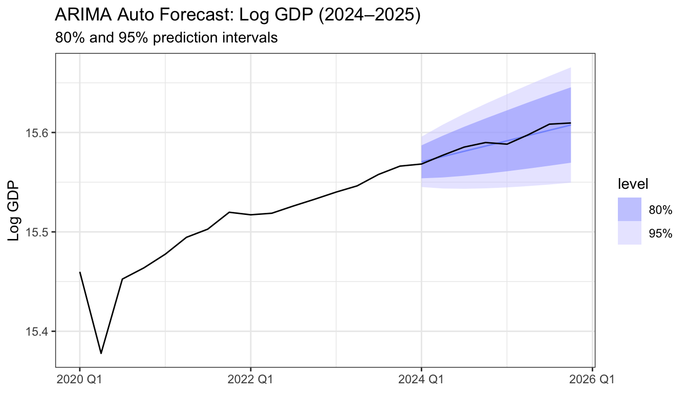
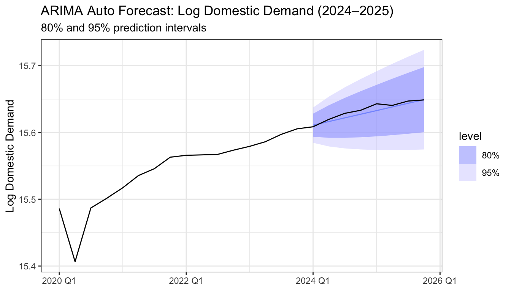
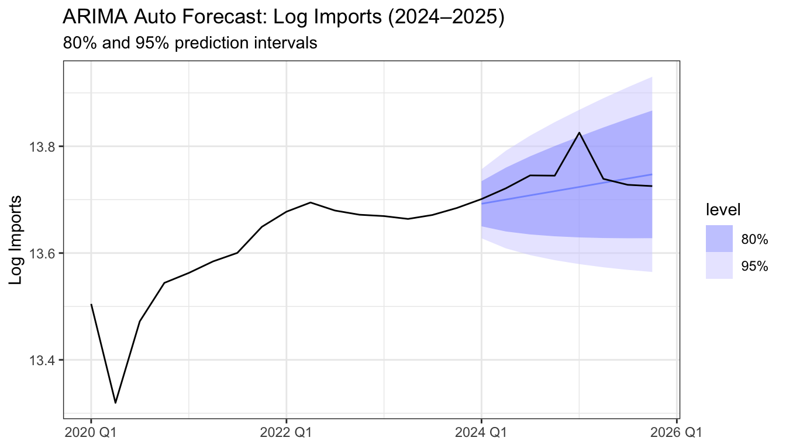
Analysis: Above is the forecasts of the ARIMA models on the test data, and we see the results of our best performing ARIMA models for each variable in the plots above. In each of the forecasts, the 95% and 80% confidence intervals all contain the real data, and the ARIMA model forecasts. Each forecast is close to the actual data, so our ARIMA specifications have worked quite well. Like the previous ETS modeling on the test data with logged imports, the spike in the test data is barely contained in the 80% confidence interval.
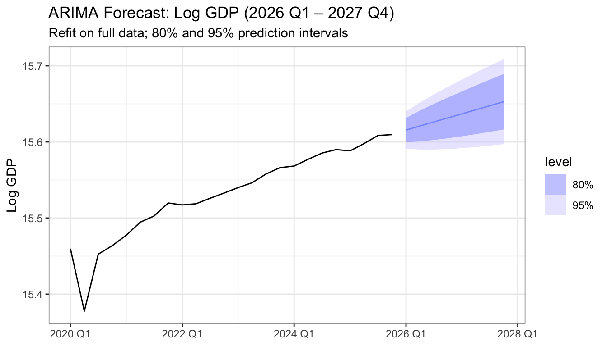
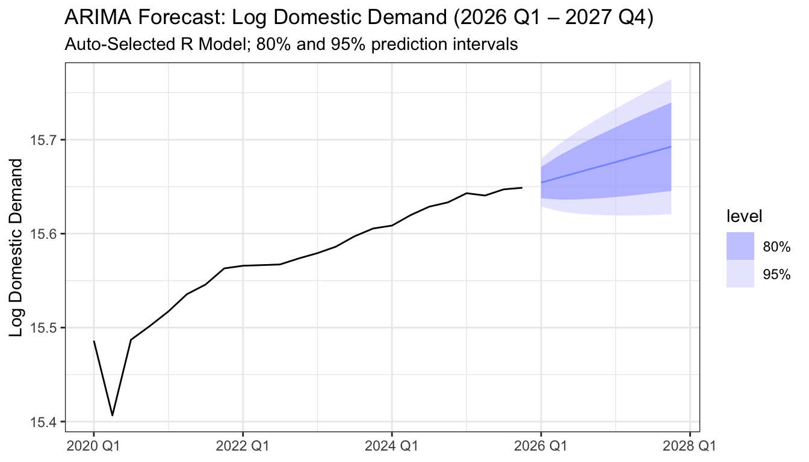
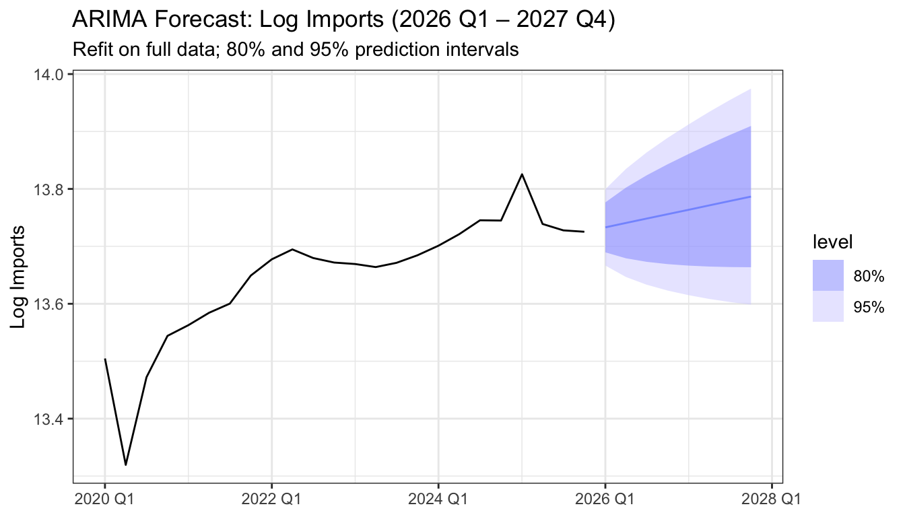
Analysis: All of these forecasts for future values use the best specification that performed well on the test data, which in this case is R’s auto-selected ARIMA for GDP and domestic demand, and ARIMA(0,1,1) for improts. So far, these ARIMA model forecasts look very similar to the ETS forecasts, including the logged import forecast values.
VAR (Vector Autoregression) jointly models all three variables as a system, allowing each variable’s forecast to be informed by the lagged values of the others. This captures cross-variable dynamics (e.g., imports responding to GDP growth with a lag) that univariate ETS and ARIMA cannot.
VAR requires stationary inputs. Because all three log series have unit roots (difference = 1), we work with first-differenced log series.
us_clean_diff <- us_clean %>%
mutate(
d_log_gdp = difference(log_gdp),
d_log_dd = difference(log_domestic_demand),
d_log_imports = difference(log_imports)
) %>%
filter(!is.na(d_log_gdp))
us_train_diff <- us_clean_diff %>% filter(date <= yearquarter("2023 Q4"))
us_test_diff <- us_clean_diff %>% filter(date >= yearquarter("2024 Q1"))
# Remove tsibble key for vars package compatibility
train_mat <- us_train_diff %>%
as_tibble() %>%
dplyr::select(d_log_gdp, d_log_dd, d_log_imports) %>%
as.matrix()| Variable | KPSS Statistic | P-value |
|---|---|---|
| Δ Log GDP | 0.0725 | 0.1 |
| Δ Log DD | 0.0980 | 0.1 |
| Δ Log Imports | 0.0356 | 0.1 |
Analysis: All our p-values are P-values are well above 0.05, so we fail to reject the null hypothesis that our data is stationary. We do not need a second difference according to the KPSS and p-value, so we can proceed on analysis.
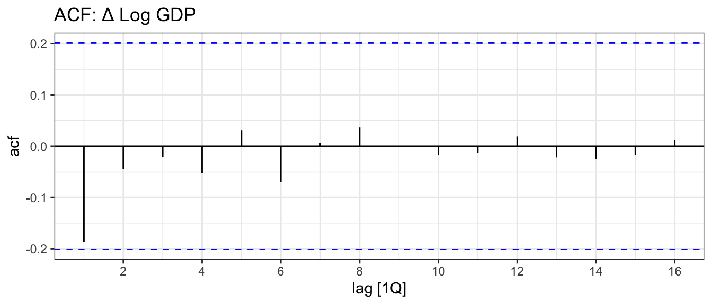
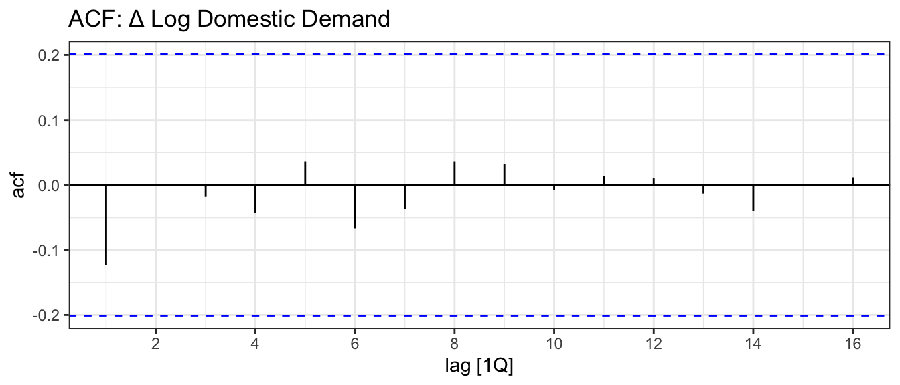
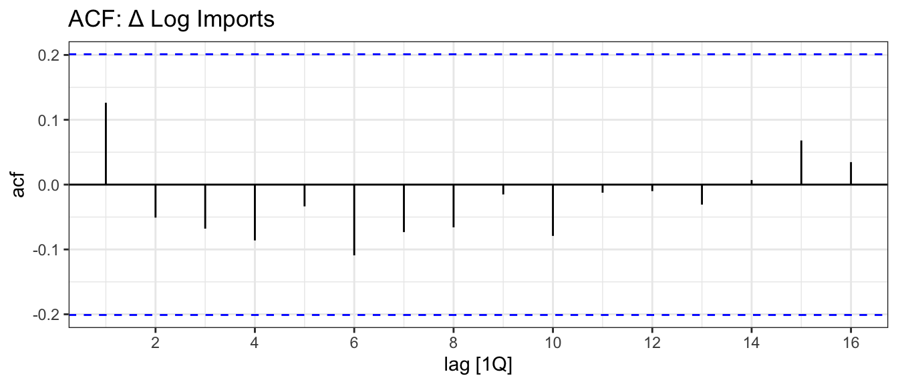
Analysis: Setting the lag amount to 16 and generating an ACF plot for each variable, we see that the differenced and logged variables have no ACF values cross the 95% boundary. This is again a confirmation that our data is stationary, and that we may proceed on analysis.
In this code chunk, R is performing a VAR lag selection for a multivariate time series, fitting lags with lengths 1 to 6, including a constant term, and through AIC, HQ, SC, and FPE, deciding what the best lag would be under each model.
# AI here helping to code, and give insight to how we as a group can interpret the results
lag_select <- VARselect(train_mat, lag.max = 6, type = "const")
lag_select$criteria 1 2 3 4 5
AIC(n) -2.972345e+01 -2.973107e+01 -2.964297e+01 -2.961141e+01 -2.951031e+01
HQ(n) -2.958820e+01 -2.949438e+01 -2.930484e+01 -2.917185e+01 -2.896931e+01
SC(n) -2.938791e+01 -2.914386e+01 -2.880410e+01 -2.852089e+01 -2.816812e+01
FPE(n) 1.234093e-13 1.225706e-13 1.341109e-13 1.388893e-13 1.545192e-13
6
AIC(n) -2.947886e+01
HQ(n) -2.883643e+01
SC(n) -2.788501e+01
FPE(n) 1.607620e-13lag_select$selectionAIC(n) HQ(n) SC(n) FPE(n)
2 1 1 2 Analysis: AIC and FPE are the most flexible according to AI, however since our goal is to forecast and AIC is the most familiar to us, we will be using 2 lags in our specifications. The other methods, HQ and SC, are more punative like BIC in order to create more stable models.
Note by AI: The recommended lag from each criterion — the most common choice across criteria is a reasonable default. With quarterly data, p=4 captures one full year of lags.
Below, using the vars package, we can observe the specifications using different lags from the previous code chunk’s table. For our purposes, we are looking at the VAR of the training data with the model, with lag 2.
# AI was used to help code in VAR specifications
var_p1 <- VAR(train_mat, p = 2, type = "const")
var_p2 <- VAR(train_mat, p = 2, type = "const")
var_p4 <- VAR(train_mat, p = 2, type = "const")
# Summary of recommended lag order (adjust based on VARselect above)
summary(var_p2)
VAR Estimation Results:
=========================
Endogenous variables: d_log_gdp, d_log_dd, d_log_imports
Deterministic variables: const
Sample size: 93
Log Likelihood: 1007.452
Roots of the characteristic polynomial:
0.5877 0.5054 0.5054 0.432 0.432 0.4114
Call:
VAR(y = train_mat, p = 2, type = "const")
Estimation results for equation d_log_gdp:
==========================================
d_log_gdp = d_log_gdp.l1 + d_log_dd.l1 + d_log_imports.l1 + d_log_gdp.l2 + d_log_dd.l2 + d_log_imports.l2 + const
Estimate Std. Error t value Pr(>|t|)
d_log_gdp.l1 -1.554991 0.694569 -2.239 0.0278 *
d_log_dd.l1 1.279521 0.829711 1.542 0.1267
d_log_imports.l1 -0.004241 0.108199 -0.039 0.9688
d_log_gdp.l2 -1.599418 0.745502 -2.145 0.0347 *
d_log_dd.l2 1.518425 0.831637 1.826 0.0713 .
d_log_imports.l2 -0.021330 0.097109 -0.220 0.8267
const 0.006915 0.001686 4.102 9.27e-05 ***
---
Signif. codes: 0 '***' 0.001 '**' 0.01 '*' 0.05 '.' 0.1 ' ' 1
Residual standard error: 0.0124 on 86 degrees of freedom
Multiple R-Squared: 0.1623, Adjusted R-squared: 0.1039
F-statistic: 2.777 on 6 and 86 DF, p-value: 0.01622
Estimation results for equation d_log_dd:
=========================================
d_log_dd = d_log_gdp.l1 + d_log_dd.l1 + d_log_imports.l1 + d_log_gdp.l2 + d_log_dd.l2 + d_log_imports.l2 + const
Estimate Std. Error t value Pr(>|t|)
d_log_gdp.l1 -1.797381 0.709767 -2.532 0.013146 *
d_log_dd.l1 1.544063 0.847866 1.821 0.072067 .
d_log_imports.l1 -0.011700 0.110567 -0.106 0.915970
d_log_gdp.l2 -1.618954 0.761815 -2.125 0.036445 *
d_log_dd.l2 1.599898 0.849834 1.883 0.063136 .
d_log_imports.l2 -0.045974 0.099234 -0.463 0.644327
const 0.006781 0.001723 3.936 0.000167 ***
---
Signif. codes: 0 '***' 0.001 '**' 0.01 '*' 0.05 '.' 0.1 ' ' 1
Residual standard error: 0.01267 on 86 degrees of freedom
Multiple R-Squared: 0.1695, Adjusted R-squared: 0.1115
F-statistic: 2.924 on 6 and 86 DF, p-value: 0.01208
Estimation results for equation d_log_imports:
==============================================
d_log_imports = d_log_gdp.l1 + d_log_dd.l1 + d_log_imports.l1 + d_log_gdp.l2 + d_log_dd.l2 + d_log_imports.l2 + const
Estimate Std. Error t value Pr(>|t|)
d_log_gdp.l1 -2.657565 1.816540 -1.463 0.1471
d_log_dd.l1 1.963110 2.169983 0.905 0.3682
d_log_imports.l1 0.268167 0.282979 0.948 0.3460
d_log_gdp.l2 -3.046578 1.949747 -1.563 0.1218
d_log_dd.l2 2.863766 2.175021 1.317 0.1915
d_log_imports.l2 -0.144075 0.253974 -0.567 0.5720
const 0.010315 0.004409 2.339 0.0216 *
---
Signif. codes: 0 '***' 0.001 '**' 0.01 '*' 0.05 '.' 0.1 ' ' 1
Residual standard error: 0.03242 on 86 degrees of freedom
Multiple R-Squared: 0.1025, Adjusted R-squared: 0.03984
F-statistic: 1.636 on 6 and 86 DF, p-value: 0.1469
Covariance matrix of residuals:
d_log_gdp d_log_dd d_log_imports
d_log_gdp 0.0001537 0.0001547 0.0003462
d_log_dd 0.0001547 0.0001605 0.0003742
d_log_imports 0.0003462 0.0003742 0.0010511
Correlation matrix of residuals:
d_log_gdp d_log_dd d_log_imports
d_log_gdp 1.0000 0.9848 0.8613
d_log_dd 0.9848 1.0000 0.9112
d_log_imports 0.8613 0.9112 1.0000Crawford verify this interpretation: The VAR(2) model is dynamically stable with all characteristic roots below 1.0. In the GDP and domestic demand equations, lags are significantly negative, lagged domestic demand positively predicts GDP, and the constants are highly significant at ~0.69% and ~0.68% quarterly growth respectively. The imports equation is weakest with no lag being significant and the joint F-test fails (p = 0.147), suggesting imports behave as exogenous to the system. Most notably, residual correlations are extremely high (0.985 between GDP and domestic demand, 0.86–0.91 with imports), indicating the three variables are driven by a common trend.
Portmanteau Serial Correlation Test is a broader version of the Box-Pierce and Ljung-Box Test, testing for stationary data series. The null hypothesis is that the data has no series correlation (no autocorrelation), and that there is no data remaining in the errors to be extracted.
--- VAR(1) Portmanteau Test ---
Portmanteau Test (asymptotic)
data: Residuals of VAR object var_p1
Chi-squared = 89.739, df = 72, p-value = 0.07689--- VAR(2) Portmanteau Test ---
Portmanteau Test (asymptotic)
data: Residuals of VAR object var_p2
Chi-squared = 89.739, df = 72, p-value = 0.07689--- VAR(4) Portmanteau Test ---
Portmanteau Test (asymptotic)
data: Residuals of VAR object var_p4
Chi-squared = 89.739, df = 72, p-value = 0.07689Analysis: The Portmanteau test evaluates whether the VAR residuals are jointly white noise across all equations. A p-value > 0.05 indicates no remaining serial correlation. Based on the results of the Portmanteau Test a lag of 1 failed the test having a p-value of 0.01245 which is less than 0.05, so we reject the null hypothesis. For lags of 2 and 4, both p-values of 0.07689 and 0.1415 are greater than 0.05. This means our data has no remaining serial correlation, and we can continue our analysis.
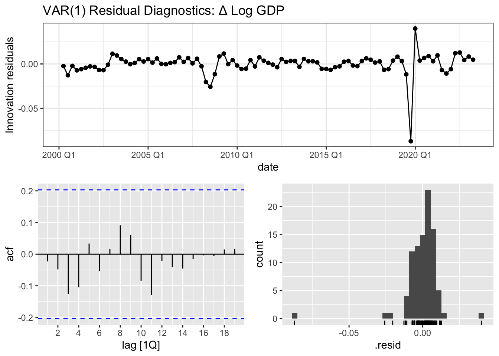
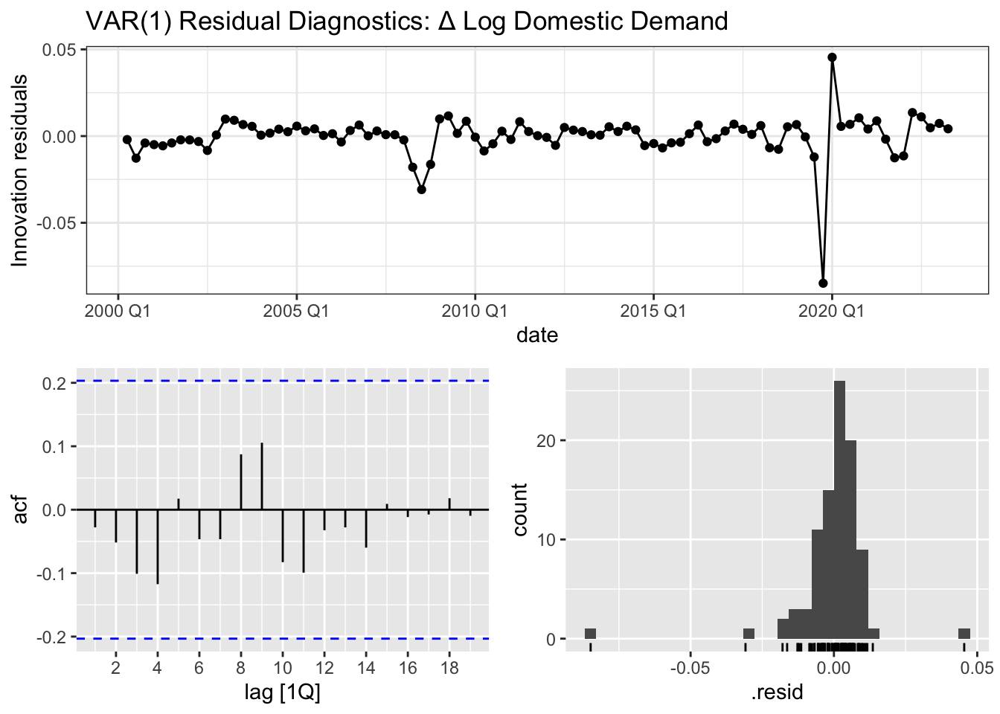
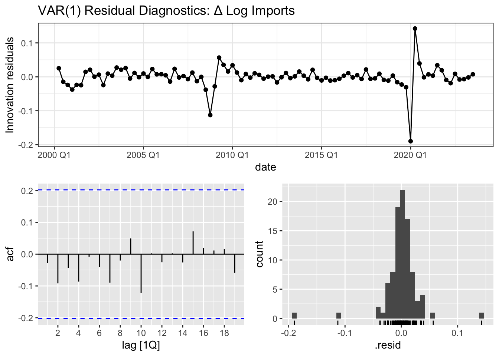
Analysis: These plots isolate each equation’s variable residuals. Again, like previous gg_tsresiduals plots our time series data clearly shows the COVID-19 shock but our data continues hovering around the mean of 0. All ACF plots for every variable have ACF values within the 95% boundary, so no autocorrelation to remove. The distribution of residuals is also normal, with clear outliers most likely from the COVID pandemic data.
# AI used to help code in the AICc/BIC testing of the VAR
# Unkey the tsibble for fable VAR (requires single index, no key)
us_train_diff_unkeyed <- us_train_diff %>%
as_tibble() %>%
as_tsibble(index = date)
fit_var <- us_train_diff_unkeyed %>%
model(
var_aicc = fable::VAR(vars(d_log_gdp, d_log_dd, d_log_imports)),
var_bic = fable::VAR(vars(d_log_gdp, d_log_dd, d_log_imports), ic = "bic")
)
glance(fit_var) %>%
knitr::kable(
format = "html",
caption = "VAR Model Fit Statistics (fable)",
digits = 2
) %>%
kableExtra::kable_styling(
bootstrap_options = c("striped", "hover", "condensed"),
full_width = FALSE,
position = "left",
font_size = 13
) %>%
kableExtra::row_spec(0,
bold = TRUE,
color = "#1a1a2e",
background = "#e8f5e9" # soft green
) %>%
kableExtra::column_spec(1, bold = TRUE, color = "#1a1a2e") %>%
kableExtra::column_spec(2:ncol(glance(fit_var)), color = "#2c2c2c")| .model | sigma2 | log_lik | AIC | AICc | BIC |
|---|---|---|---|---|---|
| var_aicc | 0.0001697582, 0.0001717648, 0.0003597625, 0.0001717648, 0.0001786697, 0.0003897780, 0.0003597625, 0.0003897780, 0.0010856435 | 998.21 | -1972.41 | -1968.61 | -1941.76 |
| var_bic | 0.0001697582, 0.0001717648, 0.0003597625, 0.0001717648, 0.0001786697, 0.0003897780, 0.0003597625, 0.0003897780, 0.0010856435 | 998.21 | -1972.41 | -1968.61 | -1941.76 |
Analysis: With the var_aicc and var_bic models, both share the exact same log_lik, AIC, AICc, and BIC values. Both the AICc and BIC values are extremely small and negative, so we should be good with the var specifications we have established such as the lag of 2.
| .model | .type | RMSE | MAE | MAPE | MASE |
|---|---|---|---|---|---|
| var_aicc | Test | 0.0043 | 0.0037 | 98.3159 | 0.3611 |
| var_aicc | Test | 0.0042 | 0.0039 | 138.7573 | 0.3952 |
| var_aicc | Test | 0.0436 | 0.0303 | 339.8932 | 1.0199 |
Warning: The `type` argument of `quantile.dist_mvnorm()` is deprecated as of
distributional 0.6.0.
ℹ Please use the `kind` argument instead.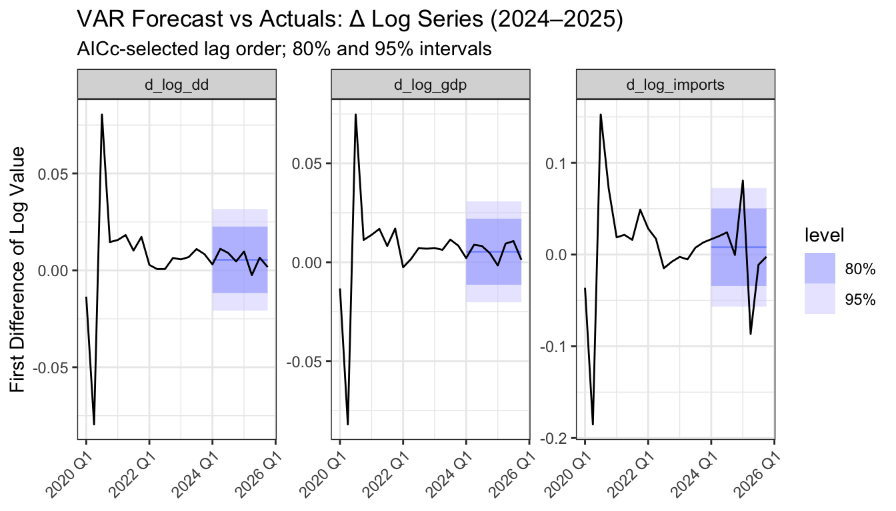
Analysis: VAR forecasts on the differenced scale represent quarter-over-quarter log growth rates. A value of 0.005 corresponds to approximately 0.5% quarterly growth. With the VAR forecasting on the test data, all the forecast values are straight lines, and the scales for y-axis differ in the three plots above. For differenced log GDP and domestic demand, the 80% confidence intervals contain all the real observation values of the variables, and that’s a good sign. Unlike the ETS and ARIMA analysis previosly, the 80% and 95% confidence intervals for imports do not contain all the real observed values. This could be due to the fact that the import graph an values fluctuate more than the GDP and domestic demand values.
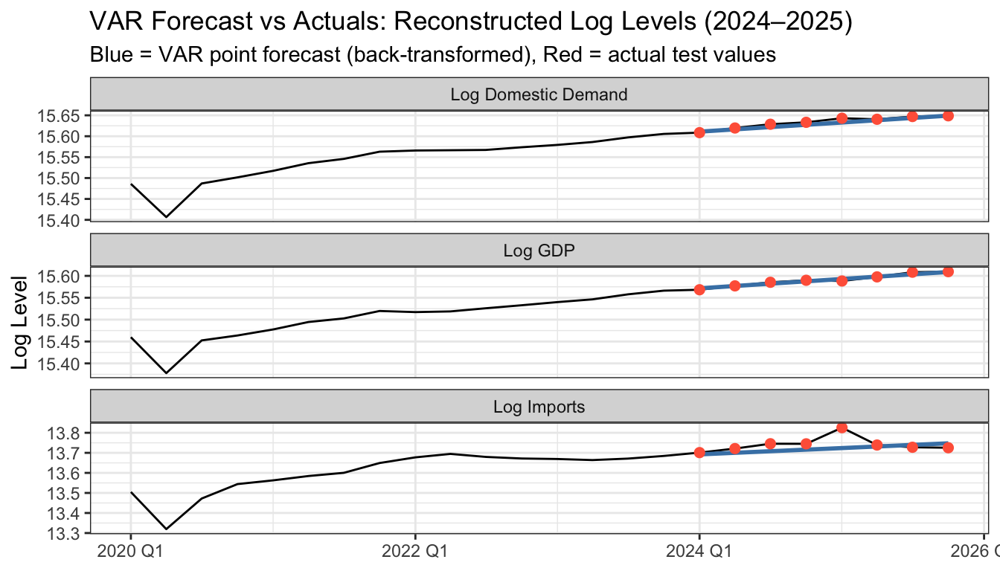
Analysis: Back-transformation via cumulative sum converts quarter-over-quarter log growth forecasts back to log level values. This is more economically interpretable as the distance between the blue forecast line and the red actual points is the forecast error on the log level scale. This forecast error on the log level scale is approximately equal to the percentage error. Like the previous code chunk with a differenced log scale, the GDP and domestic demand forecasts (dark cyan lines) do quite well fitting the test data, but the logged imports forecast continues to have a big error in fitting the data.
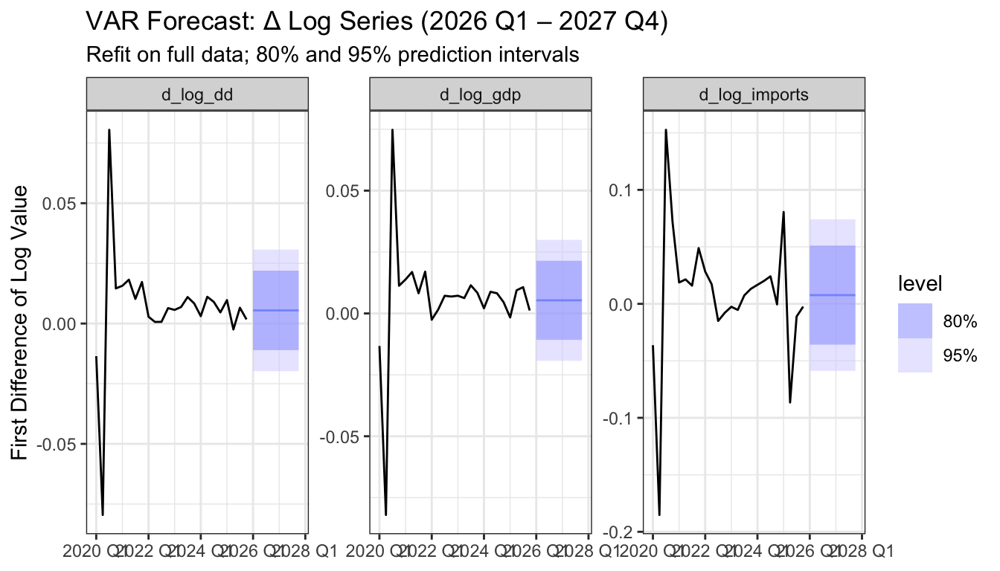
The VAR(2) model forecasts all three series of US GDP, domestic demand, and imports going to near-zero first-difference log growth through 2027 Q4, which in levels translates to slow but stable positive growth. The lag 2 structure which should have been implamented means the model is capturing up to two quarters of backward momentum. The imports panel has the widest prediction interval due to trade being highly volatile relative to GDP during demand shocks.
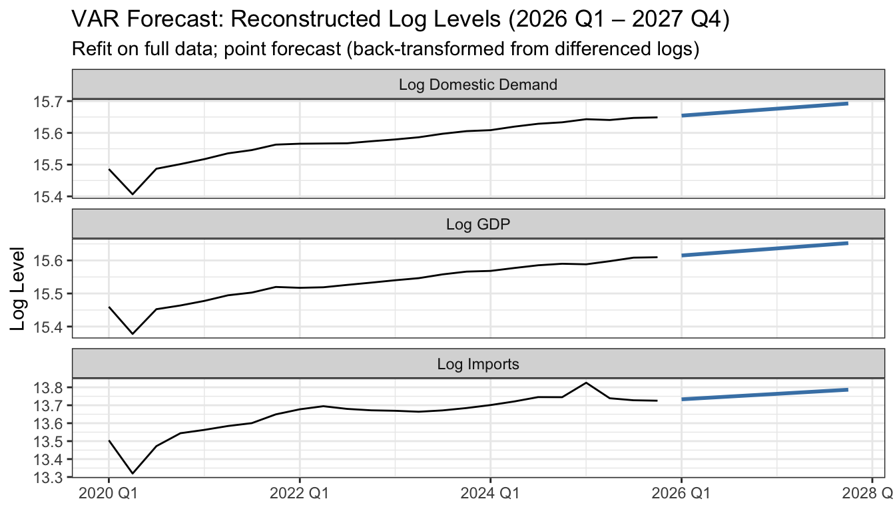
Analysis: These forecasts of future values will be what we use to directly compare to the ETS and ARIMA forward forecasts. All three models show some moderate growth, the major differences being the slope (growth rate) and multivariable relaitonships that the Vector Autoregression (VAR) model catches.
| variable | method | RMSE | MAE | MAPE | MASE |
|---|---|---|---|---|---|
| Log Domestic Demand | ARIMA | 0.0052 | 0.0043 | 0.0277 | NaN |
| Log Domestic Demand | ETS | 0.0055 | 0.0045 | 0.0287 | NaN |
| Log GDP | ARIMA | 0.0034 | 0.0030 | 0.0189 | NaN |
| Log GDP | ETS | 0.0034 | 0.0030 | 0.0191 | NaN |
| Log Imports | ETS | 0.0396 | 0.0292 | 0.2118 | NaN |
| Log Imports | ARIMA | 0.0411 | 0.0295 | 0.2140 | NaN |
| variable | method | RMSE | MAE | MAPE | MASE |
|---|---|---|---|---|---|
| Log Domestic Demand | VAR | 0.0043 | 0.0037 | 98.3159 | 0.3611 |
| Log GDP | VAR | 0.0042 | 0.0039 | 138.7573 | 0.3952 |
| Log Imports | VAR | 0.0436 | 0.0303 | 339.8932 | 1.0199 |
Note: VAR accuracy is measured on the differenced log scale while ETS and ARIMA are on the log level scale — RMSE values are not directly comparable across methods. Within each variable, compare ETS vs ARIMA (same scale). The VAR comparison is informative for understanding the differenced growth forecast quality separately.
Analysis: For each variable, identify which method achieves the lowest RMSE and lowest MAPE on the test set. If ETS wins on one criterion and ARIMA on another, both can be retained as “well-fitting” models for the final forward forecast. The VAR’s value is in capturing joint dynamics across variables rather than minimising univariate forecast error.
| Variable | Best by AICc | Best by RMSE | Recommendation |
|---|---|---|---|
| Log GDP | (fill after running) | (fill after running) | (fill after running) |
| Log Domestic Demand | (fill after running) | (fill after running) | (fill after running) |
| Log Imports | (fill after running) | (fill after running) | (fill after running) |
Note: Fill in this table after rendering based on your AICc tables and the accuracy table above.
Summary of Findings:
All three US national accounts series — GDP, domestic demand, and imports — exhibit strong upward trends with stable quarterly seasonality and remainder variance dominated by two structural breaks: the 2008–09 Global Financial Crisis and the 2020 Q2 COVID-19 collapse. The log transformation effectively stabilises variance, and first-differencing achieves stationarity as confirmed by KPSS tests.
ETS models capture the trend-seasonal structure well. The auto-selected specification will likely be an AAN or AAA model. The primary limitation is that ETS treats the COVID outlier as a one-period shock and reverts to trend quickly — this can produce overconfident forecasts if the post-COVID recovery trajectory differs from pre-pandemic trend.
ARIMA models additionally capture short-run autocorrelation structure in the differenced series. Seasonal ARIMA specifications may improve on purely non-seasonal models given the confirmed quarterly seasonal pattern in STL. ARIMA tends to produce better short-horizon forecasts for series with residual autocorrelation after differencing.
VAR captures cross-variable dynamics. GDP, domestic demand, and imports are theoretically linked — import demand depends on domestic demand and income (GDP). The VAR’s advantage is that lagged values of one variable can improve forecasts of another. On the differenced scale, this may matter most for imports, which is the most volatile of the three series.
The COVID structural break is the primary caveat for all three models. Intervention modelling or out-of-sample evaluation restricted to the post-2021 recovery period would provide a cleaner picture of forecasting performance in the current macroeconomic environment.